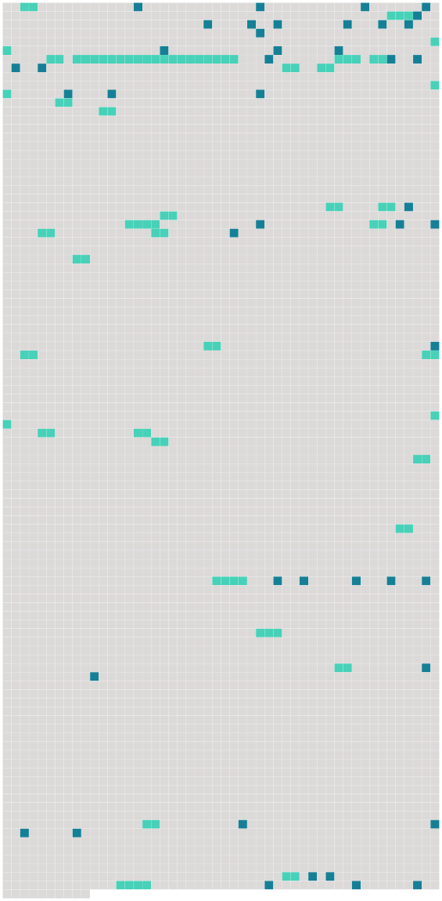

Longueur nb maillons : 81 mentions |
 |
MADEMOISELLE FIFI
Une tasse de café fumait sur un guéridon de marqueterie maculé par les liqueurs, brûlé par les cigares, entaillé par le canif de [l'officier conquérant] [qui] , parfois, s'arrêtant d'aiguiser un crayon, traçait sur le meuble gracieux des chiffres ou des dessins, à la fantaisie de [son] rêve nonchalant.
Quand [il] eut achevé [ses] lettres et parcouru les journaux allemands que [son] vaguemestre venait de [lui] apporter, [il] se leva, et, après avoir jeté au feu trois ou quatre énormes morceaux de bois vert, car ces messieurs abattaient peu à peu le parc pour se chauffer, [il] s'approcha de la fenêtre. [1 phrases]
[L'officier] regarda longtemps les pelouses inondées, et, là-bas, l'Andelle gonflée qui débordait ; et [il] tambourinait contre la vitre une valse du Rhin, quand un bruit [le] fit se retourner : c'était [son] second, le baron de Kelweingstein, ayant le grade équivalent à celui de capitaine. [Le major] était [un géant, large d'épaules, orné d'une longue barbe en éventail formant nappe sur sa poitrine] ; et toute [sa] grande personne solennelle éveillait l'idée d' [un paon militaire] , [un paon] [qui] aurait porté [sa] queue déployée à [son] menton.
[Il] avait des yeux bleus, froids et doux, une joue fendue d'un coup de sabre dans la guerre d'Autriche ; et on le disait [brave homme] autant que [brave officier] [2 phrases] [Le commandant] lui serra la main, et [il] avala d'un trait [sa] tasse de café ( la sixième depuis le matin ), en écoutant le rapport de [son] subordonné sur les incidents survenus dans le service ; puis tous deux se rapprochèrent de la fenêtre en déclarant que ce n'était pas gai.
[Le major] , homme tranquille, marié chez lui, s'accommodait de tout ; mais le baron capitaine, viveur tenace, coureur de bouges, forcené trousseur de filles, rageait d'être enfermé depuis trois mois dans la chasteté obligatoire de ce poste perdu.
Comme on grattait à la porte, [le commandant] cria d'ouvrir, et un homme, un de leurs soldats automates, apparut dans l'ouverture, disant par sa seule présence que le déjeuner était prêt. [15 phrases] Eh bien, il faut organiser une fête, si [le commandant] le permet.
»
» [2 phrases]
»
»
» [3 phrases] Bien que l'averse continuât avec autant de furie, [le major] affirma qu'il faisait moins sombre, et le lieutenant Otto annonçait avec conviction que le ciel allait s'éclaircir, Mlle Fifi elle -même ne semblait pas tenir en place. [17 phrases] Mlle Fifi, entrée la première, battait des mains avec délire devant une Vénus de terre cuite dont la tête avait enfin sauté ; et chacun ramassa des morceaux de porcelaine, s'étonnant aux dentelures étranges des éclats, examinant les dégâts nouveaux, contestant certains ravages comme produits par l'explosion précédente ; et [le major] considérait d'un air paternel le vaste salon bouleversé par cette mitraille à la Néron et sablé de débris d'objets d'art. [Il] en sortit [le premier] , en déclarant avec bonhomie : « Ça a bien réussi, cette fois. [1 phrases]
[Le commandant] ouvrit la fenêtre, et tous les officiers, revenus pour boire un dernier verre de cognac, s'en approchèrent. [8 phrases]
[Le commandant] et ses officiers riaient ensemble de ce courage inoffensif ; et comme le pays entier se montrait obligeant et souple à leur égard, ils toléraient volontiers son patriotisme muet. [1 phrases] Il enrageait de la condescendance politique de [son supérieur] pour le prêtre ; et chaque jour il suppliait [le commandant] de le laisser faire « Ding-don-don, » une fois, une seule petite fois, pour rire un peu seulement.
Et il demandait cela avec des grâces de chatte, des cajoleries de femme, des douceurs de voix d'une maîtresse affolée par une envie ; mais [le commandant] ne cédait point, et Mlle Fifi, pour se consoler, faisait la XXXmineXXX dans le château d'Uville. [4 phrases]
Les cheveux [du commandant] semblaient moins gris que le matin ; et le capitaine s'était rasé, ne gardant que sa moustache, qui lui mettait une flamme sous le nez. [11 phrases]
» [9 phrases] [Le commandant] [lui -même] semblait enchanté ; [il] prit à [sa] droite Paméla, Blondine à [sa] gauche, et [déclara] , en dépliant [sa] serviette : « Vous avez eu là une charmante idée, capitaine. [6 phrases]
[Le commandant seul] gardait de la retenue. [6 phrases]
[Le commandant] se leva, et du même ton qu' [il] aurait pris pour porter la santé de l'impératrice Augusta, [il] but : [35 phrases]
[Le major] , non sans peine, empêcha cette boucherie, [fit] enfermer dans une chambre, sous la garde de deux hommes, les quatre filles éperdues ; puis, comme s' [il] eût disposé [ses] soldats pour un combat, [il] organisa la poursuite de la fugitive, bien certain de la reprendre. [11 phrases] Le général, prévenu, ordonna d'étouffer l'affaire, pour ne point donner de mauvais exemple dans l'armée, et il frappa d'une peine disciplinaire [le commandant] , [qui] punit [ses] inférieurs. [1 phrases]
» Et [le comte de Farlsberg] , exaspéré, résolut de se venger sur le pays.
Comme il [lui] fallait un prétexte afin de sévir sans contrainte, [il] fit venir le curé et lui [ordonna] de sonner la cloche à l'enterrement du marquis d'Eyrik. |
 |
La ressource peut être téléchargée sur la page Ortolang
Si vous avez des questions ou vous voyez des erreurs, merci d'envoyer un mail à silvia.federzoni89@gmail.com
Site développé par S. Federzoni (contact)